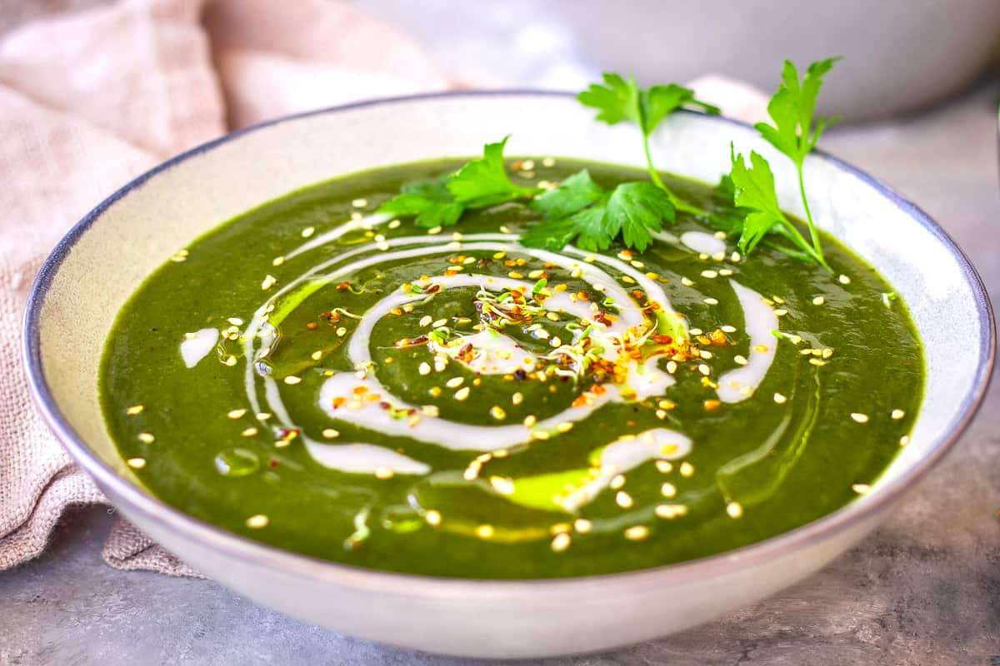

Home
Nettle Soup

Nettle soup is rich in iron and other nutrients. The nettles must be harvested with care, but the product of your work is worth the trouble. This swediish recipe for the rich soup is best made in the springtime while the shoots are tender.
Serves 4
Ingredients
- 8 cups stinging nettle shoots
- 1 cup plus 3 1/2 - 4 1/2 cups water
- 1 teaspoon salt
- 3 tablespoons butter
- 1/2 cup chopped chives
- 1 chicken bullion cube*
- 1 vegetable bullion cube*
- 1 teaspoon dried thyme
- dash of white pepper
- 1-2 teaspoons cornstarch
- boiled eggs and creme fraiche to serve
*If the instructions for your bullion cubes say they only make 1 cup (240ml) of broth, use two of them.
Directions
- Rinse the nettles well by swishing them around in a sink of cold water and letting them float for a couple of minutes so any dirt will sink to the bottom. They will still sting at this stage so work carefully. Gently remove the nettles from the water trying not to disturb dirt in the bottom and keep an eye out for any unwanted bugs that need to be removed.
- Place the nettles in a 2 quart (2 liter) stock pot. Add 1 cup (240ml) water and sprinkle 1 teaspoon of salt over the top of the nettles. Cover and bring to a boil. Reduce heat to a low boil and let the nettles cook for 5-10 minutes. If you are comfortable with the cleanliness of your nettles, strain off the cooking water and save it, pressing gently on the nettles to release more of their liquid. Otherwise discard the cooking water. Place the cooked nettles on a cutting board.
- Melt the butter in the same stock pot over medium heat. Add the chives and cook 1-2 minutes. Crumble the bullion cubes into the mix, breaking them up and stirring to dissolve them into the butter.
- Chop the cooked nettles on the cutting board by hacking them vertically, horizontally, and diagonally both ways, with a chef’s knife until you reach the desired consistency. They can be coarse or very finely chopped. Add them to the stock pot along with the remaining water (3 1/2 cups if using the water reserved from cooking the nettles or 4 1/2 cups if the nettle cooking liquid was discarded), thyme, and white pepper. Sprinkle the cornstarch over the pot while mixing constantly. Bring to a boil and cook until the soup thickens slightly. Serve hot with halved hard-boiled eggs for garnish. Provide crème fraiche alongside.